Nowe atrybuty dla input oraz innych typów pól
Poznajmy nowe atrybuty dla pól deteminujące sposób nawigacji po formularzu oraz możliwości wprowadzania danych.
readonly="readonly"
Jest to typ wprowadzania danych, umożliwiający jedynie wpisanie wartości do pola lub jej skopiowanie. Nie można zatwierdzić jej przez przycisk submit.
disabled="disabled"
Oznacza, że dana kontrolka jest niedostępna i nie można do niej wprawadzać danych.
tabindex="..."
Określa kolejność zaznaczania pól podczas nawigacji klawiszem Tab. Podajemy do niej wartości liczbowe, przy czym 1 ma pierwszą kolejność zaznaczenia, 2 - drugą itd.
accesskey="..."
To wartość literowa dla danego pola, po której kliknięciu element zostanie zaznaczony. Inaczej: skrót klawiszowy. Należy jednak pamiętać o sprawdzeniu domyślnych skrótów klawiszowych poszczególnych przeglądarek, aby się one nie pokrywały.
maxlenght="..." i size="..."
Atrybut maxlenght="..." determinuje maksymalną ilość zanaków jaka będzie mogła być wpisana do pola. Natomiast pole size="...", określi nam szerokość jaką przyjmie pole liczone w ilościach znaków. Aby ta opcja działa należy nie mieć ustaiownej żadnej szerokości na polu input!.
Nowe pola formularzy
Zobaczmy teraz w jaki sposób zaimplementować specjalne pola wyboru dla znacznika <input ... ∕>
type="checkbox"
Jest to pole wielokrotnego wyboru. Pojedynczy input odpowiada jednej opcji wyboru. Może przyjmować dodatkowy atrybut checked="checked", który domyślnie zaznaczy wybraną odpowiedź.
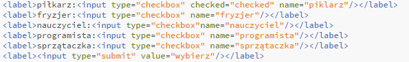 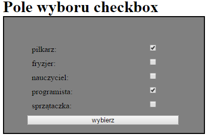type="radio"
Jest to pole jednokrotnego wyboru. Pojedynczy input odpowieda jednej opcji wyboru. Dla każdej z tej opcji konieczna jest wybranie tego samego name!
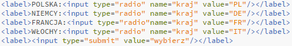 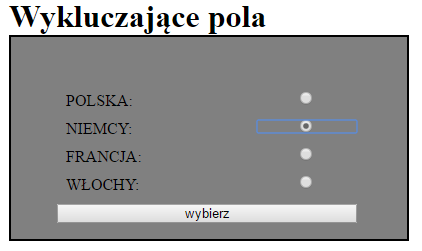type="hidden"
Pole ukryte, lecz widoczne na pasku adresu.
type="button"
Określa przycisk. Musi być oprogramowane.
type="file"
Za jego pomocą można ładować pliki do formularza. Wymaga ustawienia na form method="post" oraz enctype="multipart/formdata".
type="image"
Obrazek staje się przyciskiem. Wymaga ustawienia na form method="post". Posiada dodatkowe atrybuty:
- name="..."
- src="..."
- alt="..."
type="reset"
Czyści wypełnienie formularzy.
type="file"
Za jego pomocą można ładować pliki do formularza. Wymaga ustawienia na form method="post" oraz enctype="multipart/formdata".
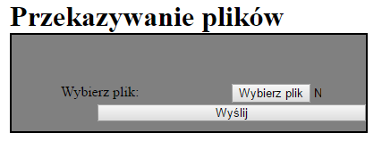<button>
To nacznik kontenerowy do którego można wprowadzać takie type="..." jako atrybut jak:
- button
- reset
- submit
Są one odzwieciedleniami wcześniejszych pól. Pomiędzy znaczniki możemy wprowadzić koknkretną zawartość dla tego pola, np. teskt lub obrazek.
Lista wyboru
Zobaczmy teraz w jaki sposób zaimplementować liste wyboru:
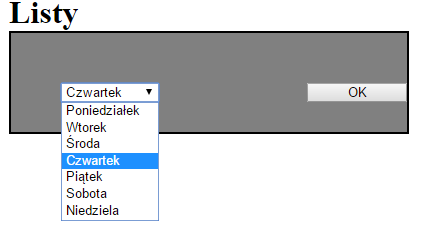 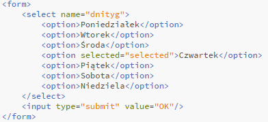 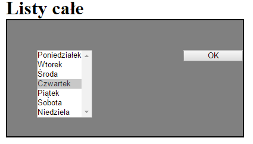 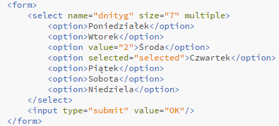 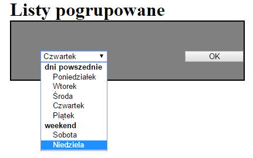 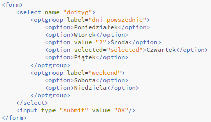Label, fieldset, legend oraz textbox
Zobaczmy teraz w jaki sposób zaimplementować wydzielone obramowania dla list oraz większy obszar na wprowadzanie testu.
W zanczniku form zawrzemy:
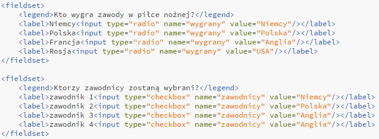 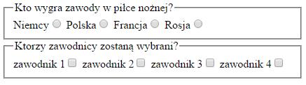 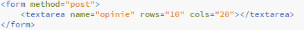 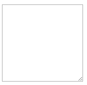